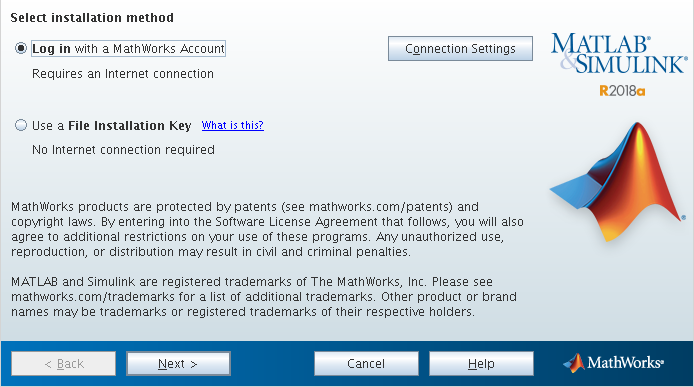
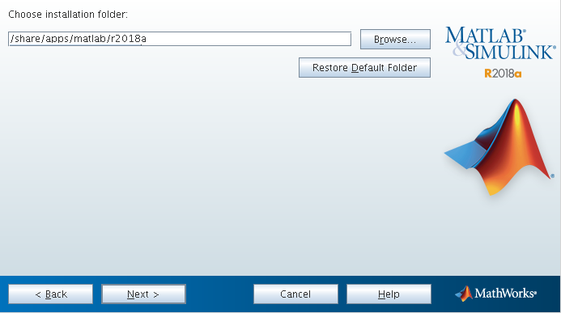
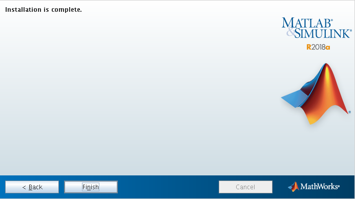
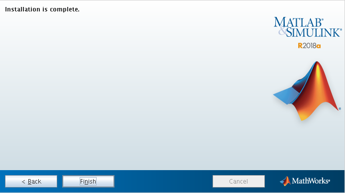

Tested on (Requirements)¶
License Manager Server: Virtual machine (CentOS 7 Minimal (x86_64))
OS base: CentOS (x86_64) \(\boldsymbol{\ge}\) 6.6
MPI: Intel MPI \(\boldsymbol{\ge}\) 17.0.1 (Mandatory to use with Infiniband networks)
Scheduler: SLURM \(\boldsymbol{\ge}\) 16.05.6
Application: MATLAB Client (Optional)
Extra Libraries:
libXtst (Troubleshooting)
License Manager¶
The License Manager provides a network license support to allow the usage of the different MATLAB features on the clusters (Apolo II and Cronos).
In this case we have two types of licenses, the first one is for the MATLAB Distributed Computing Engine (MDCE) and the second one for MATLAB client with all the toolboxes available.
Next steps will describe the installation and configuration process for the MLM (MATLAB License Manager based on FlexLM 1):
Get the online installer using your MATLAB account.
Send the installation package to the License Manager server (VM).
scp matlab_R2018a_glnxa64.zip root@<FQDN>:$installer_pathFollow the next steps to run the MATLAB installer.
Unzip and access the installer files.
ssh -X root@<FQDN> cd $installer_path$ mkdir matlab-R2018a mv matlab-R2018a matlab_R2018a_glnxa64.zip cd matlab-R2018a unzip matlab_R2018a_glnxa64.zip
Execute the installer.
./install
Note
Select the installation method (by MATLAB account).
Accept license agreement (yes).

Login (username and password).

Select license (MDCE license).

Folder selection (/usr/local/MATLAB/R2018a).

Products selection (License Manager 11.14.1.2).

License file.
Note
Login to the MATLAB admin account and download the license file (license.dat) created for this feature (MDCE - MATLAB Distributed Computign Engine) and upload it to the License Manager server in the
/usr/local/MATLAB/R2018a/etcdirectory.scp license.lic root@<FQDN>: /usr/local/MATLAB/R2018a/etc

Finish the installation process.
Configure MLM (FlexLM).
Access the License Manager machine via SSH.
Create a system user without privileges to run MLM.
# Create a non-root user to launch matlab (security reasons) ## -u uid ## -d homedir ## -r system user ## -s shell (no login user) useradd -u 110 -c "MDCE" -d /var/tmp -r -s /sbin/nologin matlab
Create the daemon service to execute automatically MLM.
[Unit] Description=MATLAB FlexLM license manager [Service] User=matlab RemainAfterExit=True ExecStart=/usr/local/MATLAB/R2018a/etc/lmstart ExecStop=/usr/local/MATLAB/R2018a/etc/lmdown [Install] WantedBy=multi-user.target
Configure MLM ports and firewall on the license manager machine.
Review the server port (27000) and specify MLM daemon port (53200) at the top of the license file (
/usr/local/MATLAB/R2018a/etc/license.dat)SERVER <HOSTNAME> <HOSTID> 27000 DAEMON MLM "/usr/local/MATLAB/R2018a/etc/MLM" port=53200 ...
Open those ports in License manager machine firewall (CentOS 7).
firewall-cmd --permanent --add-port=53200/tcp firewall-cmd --permanent --add-port=27000/tcp
Configure both licenses (MDCE and MATLAB client with all the toolboxes).
Note
After the installation process, the MLM generates a new file license called license.dat on the
/usr/local/MATLAB/R2018a/etcdirectory with the information given in license.lic file during the installation process (MDCE license).Download the
license.licfile related with MATLAB client and its toolboxes from the MATLAB administrator account, then open it with a text editor to copy all the INCREMENTS lines.Append all (MATLAB client and its toolboxes) INCREMENTS lines (licensed products) to end of the
license.daton the License Manager server.SERVER <FQDN> <HOSTID> 27000 DAEMON MLM "/usr/local/MATLAB/R2018a/etc/MLM" port=53200 # BEGIN--------------BEGIN--------------BEGIN # MathWorks license passcode file. # LicenseNo: ######## HostID: ############ # # R2018a # INCREMENT MATLAB_Distrib_Comp_Engine MLM 39 <END_DATE> <NUM_WORKES> \ ... INCREMENT MATLAB MLM 39 <END_DATE> ##################### \ ... INCREMENT SIMULINK MLM 39 <END_DATE> ##################### \ ... ... continue ... ...
Enable and start the daemon.
systemctl enable lm-matlab systemctl start lm-matlabCheck the log file to see if everything works properly.
/var/tmp/lm_TMW.log8:49:38 (lmgrd) ----------------------------------------------- 8:49:38 (lmgrd) Please Note: 8:49:38 (lmgrd) 8:49:38 (lmgrd) This log is intended for debug purposes only. 8:49:38 (lmgrd) In order to capture accurate license 8:49:38 (lmgrd) usage data into an organized repository, 8:49:38 (lmgrd) please enable report logging. Use Flexera Software LLC's 8:49:38 (lmgrd) software license administration solution, 8:49:38 (lmgrd) FlexNet Manager, to readily gain visibility 8:49:38 (lmgrd) into license usage data and to create 8:49:38 (lmgrd) insightful reports on critical information like 8:49:38 (lmgrd) license availability and usage. FlexNet Manager 8:49:38 (lmgrd) can be fully automated to run these reports on 8:49:38 (lmgrd) schedule and can be used to track license 8:49:38 (lmgrd) servers and usage across a heterogeneous 8:49:38 (lmgrd) network of servers including Windows NT, Linux 8:49:38 (lmgrd) and UNIX. 8:49:38 (lmgrd) 8:49:38 (lmgrd) ----------------------------------------------- 8:49:38 (lmgrd) 8:49:38 (lmgrd) 8:49:38 (lmgrd) Server's System Date and Time: Wed Jul 18 2018 08:49:38 -05 8:49:38 (lmgrd) SLOG: Summary LOG statistics is enabled. 8:49:38 (lmgrd) FlexNet Licensing (v11.14.1.2 build 208719 x64_lsb) started on <FQDN> (linux) (7/18/2018) 8:49:38 (lmgrd) Copyright (c) 1988-2017 Flexera Software LLC. All Rights Reserved. 8:49:38 (lmgrd) World Wide Web: http://www.flexerasoftware.com 8:49:38 (lmgrd) License file(s): /var/tmp/lm_TMW.dat 8:49:38 (lmgrd) lmgrd tcp-port 27000 ... 8:49:38 (lmgrd) (@lmgrd-SLOG@) =============================================== 8:49:38 (lmgrd) (@lmgrd-SLOG@) === LMGRD === 8:49:38 (lmgrd) (@lmgrd-SLOG@) Start-Date: Wed Jul 18 2018 08:49:38 -05 8:49:38 (lmgrd) (@lmgrd-SLOG@) PID: 19339 8:49:38 (lmgrd) (@lmgrd-SLOG@) LMGRD Version: v11.14.1.2 build 208719 x64_lsb ( build 208719 (ipv6)) 8:49:38 (lmgrd) (@lmgrd-SLOG@) 8:49:38 (lmgrd) (@lmgrd-SLOG@) === Network Info === 8:49:38 (lmgrd) (@lmgrd-SLOG@) Listening port: 27000 ... 8:49:38 (lmgrd) (@lmgrd-SLOG@) 8:49:38 (lmgrd) (@lmgrd-SLOG@) === Startup Info === 8:49:38 (lmgrd) (@lmgrd-SLOG@) Server Configuration: Single Server 8:49:38 (lmgrd) (@lmgrd-SLOG@) Command-line options used at LS startup: -z -c /var/tmp/lm_TMW.dat 8:49:38 (lmgrd) (@lmgrd-SLOG@) License file(s) used: /var/tmp/lm_TMW.dat 8:49:38 (lmgrd) (@lmgrd-SLOG@) =============================================== 8:49:38 (lmgrd) Starting vendor daemons ... 8:49:38 (lmgrd) Using vendor daemon port 53200 specified in license file ... 8:49:38 (lmgrd) Started MLM (internet tcp_port 53200 pid 19341) ... 8:49:38 (MLM) FlexNet Licensing version v11.14.1.2 build 208719 x64_lsb 8:49:38 (MLM) SLOG: Summary LOG statistics is enabled. 8:49:38 (MLM) SLOG: FNPLS-INTERNAL-CKPT1 8:49:38 (MLM) SLOG: VM Status: 0 ... 8:49:38 (lmgrd) MLM using TCP-port 53200 8:49:38 (MLM) License verification completed successfully. ... 8:49:38 (MLM) SLOG: Statistics Log Frequency is 240 minute(s). 8:49:38 (MLM) SLOG: TS update poll interval is 600 seconds. 8:49:38 (MLM) SLOG: Activation borrow reclaim percentage is 0. 8:49:38 (MLM) (@MLM-SLOG@) =============================================== 8:49:38 (MLM) (@MLM-SLOG@) === Vendor Daemon === 8:49:38 (MLM) (@MLM-SLOG@) Vendor daemon: MLM 8:49:38 (MLM) (@MLM-SLOG@) Start-Date: Wed Jul 18 2018 08:49:38 -05 8:49:38 (MLM) (@MLM-SLOG@) PID: 19341 8:49:38 (MLM) (@MLM-SLOG@) VD Version: v11.14.1.2 build 208719 x64_lsb ( build 208719 (ipv6)) 8:49:38 (MLM) (@MLM-SLOG@) 8:49:38 (MLM) (@MLM-SLOG@) === Startup/Restart Info === 8:49:38 (MLM) (@MLM-SLOG@) Options file used: None 8:49:38 (MLM) (@MLM-SLOG@) Is vendor daemon a CVD: No 8:49:38 (MLM) (@MLM-SLOG@) Is TS accessed: No 8:49:38 (MLM) (@MLM-SLOG@) TS accessed for feature load: -NA- 8:49:38 (MLM) (@MLM-SLOG@) Number of VD restarts since LS startup: 0 8:49:38 (MLM) (@MLM-SLOG@) 8:49:38 (MLM) (@MLM-SLOG@) === Network Info === 8:49:38 (MLM) (@MLM-SLOG@) Listening port: 53200 8:49:38 (MLM) (@MLM-SLOG@) Daemon select timeout (in seconds): 1 8:49:38 (MLM) (@MLM-SLOG@) 8:49:38 (MLM) (@MLM-SLOG@) === Host Info === 8:49:38 (MLM) (@MLM-SLOG@) Host used in license file: <FQDN> ...
After that, the license manager service should run without problems, if there is any trouble with the service you can debug this process checking the log file (
/var/tmp/lm_TMW.log) to understand what is happening.tailf /var/tmp/lm_TMW.log
MATLAB Distributed Computing Server (MDCS)¶
This entry described the installation process of MDCS on the cluster and its integration with the License Manager.
Get the online installer using your MATLAB account.
Send the installation file to the master node on your cluster.
scp matlab_R2018a_glnxa64.zip root@<FQDN>:$installer_path$Follow next steps to run the MATLAB installer.
Unzip and access the installer files.
ssh -X root@<FQDN> cd $installer_path$ mkdir matlab-R2018a mv matlab-R2018a matlab_R2018a_glnxa64.zip cd matlab-R2018a unzip matlab_R2018a_glnxa64.zip
Create the installation directory.
mkdir -p /share/apps/matlab/r2018a
Execute the installer.
./install
Note
Select the installation method (by MATLAB account).
Accept license agreement (yes).
Login (username and password).
Select license (MDCE license).
Folder selection (
/share/apps/matlab/r2018a).Note
Use a shared file system to do an unique installtion across all the nodes in the cluster.
/share/apps/matlab
Products selection (All products except License Manager 11.14.1.2).
Note
MATLAB recommends install every Toolbox available because in this way they can be used by MDCE workers.

License file (
/share/apps/matlab/r2018a/etc).Note
Download and upload the modified
license.datfile on the License Manager server to the/share/apps/matlab/r2018a/etcdirectory on the cluster.mkdir -p /share/apps/matlab/r2018a/etc cd /share/apps/matlab/r2018a/etc sftp user@<LICENSE_MANAGER_SERVER> cd /usr/local/MATLAB/R2018a/etc mget license.dat

Finish the installation process.

 

Intregration with SLURM¶
To integrate the MATLAB client on the cluster to use SLURM as resource manager you have to follow next steps:
Add the MATLAB integration scripts to its MATLAB PATH by placing the integration scripts into
/share/apps/matlab/r2018a/toolbox/localdirectory (Apolo IIorCronos).Linux
scp apolo.local.zip or cronos.local.zip <user>@cluster:$path/to/file mv $path/to/file/matlab-apolo.zip$ /share/apps/matlab/r2018a/toolbox/local cd /share/apps/matlab/r2018a/toolbox/local unzip apolo.local.zip or cronos.local.zip rm apolo.local.zip or cronos.local.zip
Open the MATLAB client on the cluster to configure it.
(If MATLAB client is installed in a system directory, we strongly suggest to open it with admin privileges, it is only necessary the first time to configure it).
ssh -X username@<master> module load matlab/r2018a matlab

Add the integrations scripts to the MATLAB PATH
Press the “Set Path” button

Press the “Add with Subfolders” button and choose the directory where you unzip the integrations scripts and finally press the “Save” button:
/share/apps/matlab/r2018a/toolbox/local/cronos.local \or\ apolo.local


Configuring Cluster Profiles¶
Open again your MATLAB Client (without admin privilages)
Load the cluster profile and configure it to submit jobs using SLURM via MDCS.
>> configCluster >> % Must set TimeLimit before submitting jobs to Cronos >> % e.g. to set the TimeLimit and Partition >> c = parcluster('cronos'); >> c.AdditionalProperties.TimeLimit = '1:00:00'; >> c.AdditionalProperties.Partition = 'longjobs'; >> c.saveProfile
Custom options
TimeLimit → Set a limit on the total run time of the job allocation (more info).
e.g.
c.AdditionalProperties.TimeLimit = ‘3-10:00:00’;
AccountName → Change the default user account on Slurm.
e.g.
c.AdditionalProperties.AccountName = ‘apolo’;
ClusterHost → Another way to change the cluster hostname to sumbit jobs.
e.g.
c.AdditionalProperties.ClusterHost = ‘apolo.eafit.edu.co’;
EmailAddress → Get all job notifications by e-mail.
e.g.
c.AdditionalProperties.EmailAddress = ‘apolo@eafit.edu.co’;
EmailType → Get only the desired notifications based on sbatch options.
e.g.
c.AdditionalProperties.EmailType = ‘END,TIME_LIMIT_50’;
MemUsage → Total amount of memory per machine (more info).
e.g.
c.AdditionalProperties.MemUsage = ‘5G’;
NumGpus → Number of GPUs to use in a job (currently the maximum possible NumGpus value is two, also if you select this option you have to use the ‘accel’ partition on Apolo II).
e.g.
c.AdditionalProperties.NumGpus = ‘2’;
Partition → Select the desire partition to submit jobs (by default longjobs partition will be used)
e.g.
c.AdditionalProperties.Partition = ‘bigmem’;
Reservation → Submit a job into a reservation (more info).
e.g.
c.AdditionalProperties.Reservation = ‘reservationName’;
AdditionalSubmitArgs → Any valid sbatch parameter (raw) (more info)
e.g.
c.AdditionalProperties.AdditionalSubmitArgs = ‘–no-requeue’;
Troubleshooting¶
When you ran the MATLAB installer with the command
./install, it prints:Preparing installation files ... Installing ...
Then a small MATLAB window appears and after a while it closes and prints on prompt:
Finished
To solve this problem, you have to find the root cause modifying
$MATLABINSTALLERPATH/bin/glnxa64/install_unixscript to look thestderrorand understand what is happening.At line 918 change this statement
eval “$java_cmd 2> /dev/null”toeval “$java_cmd”, by this way you can see the related errors launching the MATLAB installer.e.g. missing library libXtst.so.6
Module file¶
#%Module1.0####################################################################
##
## module load matlab/r2018a
##
## /share/apps/modules/matlab/r2018a
## Written by Mateo Gómez Zuluaga
##
proc ModulesHelp {} {
global version modroot
puts stderr "Sets the environment for using Matlab R2018a\
\nin the shared directory /share/apps/matlab/r2018a."
}
module-whatis "(Name________) matlab"
module-whatis "(Version_____) r2018a"
module-whatis "(Compilers___) "
module-whatis "(System______) x86_64-redhat-linux"
module-whatis "(Libraries___) "
# for Tcl script use only
set topdir /share/apps/matlab/r2018a
set version r2018a
set sys x86_64-redhat-linux
conflict matlab
prepend-path PATH $topdir/bin
- 1
Wikipedia contributors. (2018, April 13). FlexNet Publisher. In Wikipedia, The Free Encyclopedia. Retrieved 20:44, July 18, 2018, from https://en.wikipedia.org/w/index.php?title=FlexNet_Publisher&oldid=836261861